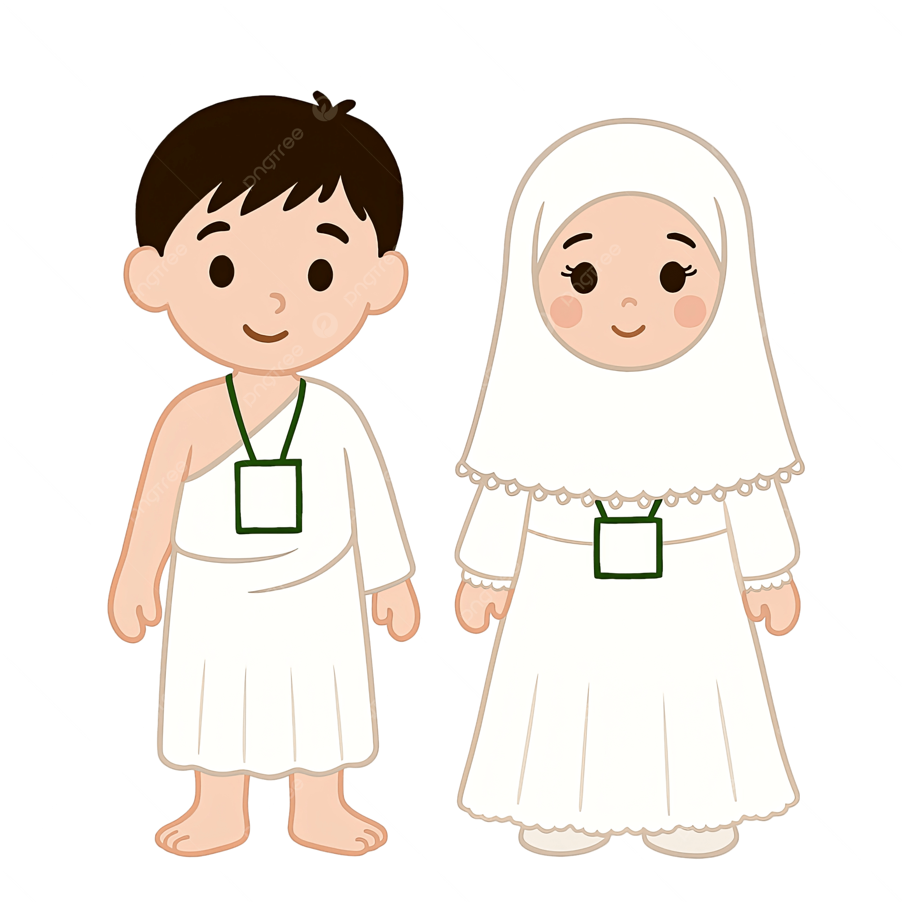
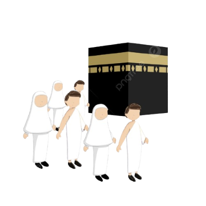
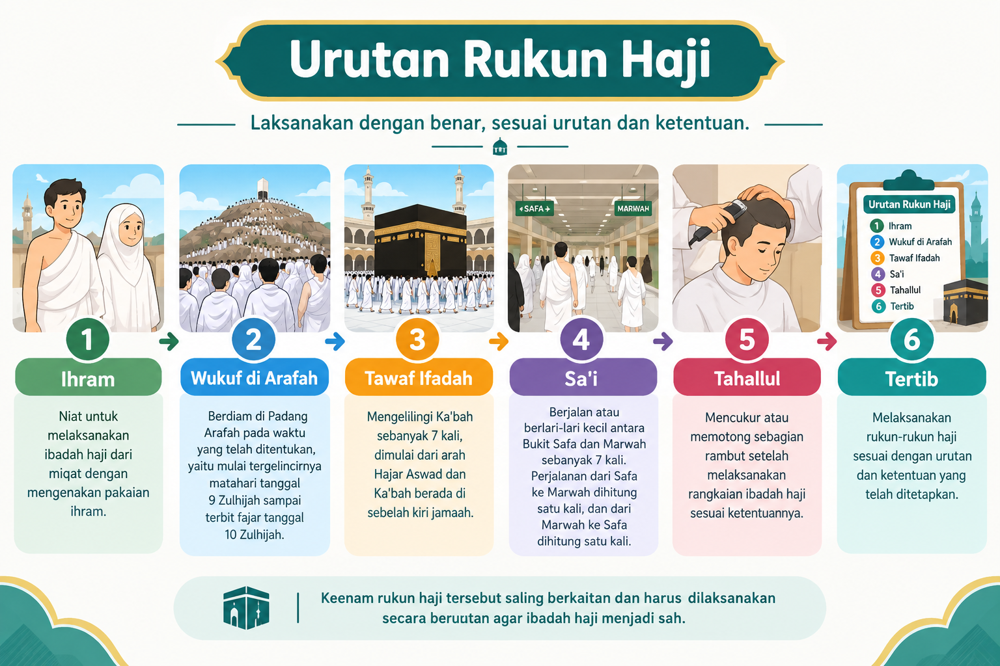

ﷲ﷽
🕋 Mari Mengenal Rukun Haji

'Ihram'
Ihram adalah niat untuk melaksanakan ibadah haji yang dilakukan dari miqat yang telah ditentukan. Bagi laki-laki, pakaian ihram terdiri dari dua lembar kain putih tanpa jahitan yang dipakai untuk menutupi tubuh. Sedangkan perempuan mengenakan pakaian yang sopan, longgar, menutup aurat, dan tidak harus berwarna putih.
Sebelum memakai ihram, jamaah dianjurkan untuk mandi, membersihkan diri, memakai wewangian (khusus sebelum berniat ihram bagi laki-laki), dan melaksanakan salat sunnah ihram jika memungkinkan. Setelah itu, jamaah berniat (berihram) dan mulai mengucapkan talbiyah sebagai tanda dimulainya ibadah haji.
Pakaian ihram melambangkan kesederhanaan, kesucian, persamaan derajat, dan ketaatan kepada Allah SWT. Ketika telah berihram, jamaah haji wajib menaati berbagai larangan ihram sampai diperbolehkan untuk melakukan tahallul. Ihram menjadi awal dari pelaksanaan rangkaian ibadah haji.

'Wuquf'
Wukuf adalah berdiam diri di Padang Arafah pada waktu yang telah ditentukan. Wukuf dilaksanakan mulai dari tergelincirnya matahari pada tanggal 9 Zulhijah sampai terbit fajar pada tanggal 10 Zulhijah. Pada saat wukuf, jamaah dianjurkan memperbanyak doa, zikir, membaca Al-Qur'an, dan memohon ampun kepada Allah SWT. Wukuf merupakan salah satu rukun haji yang sangat penting. Suasana ini mengajarkan bahwa semua manusia sama di hadapan Allah, tanpa membedakan suku, bangsa, maupun kedudukan.
Wukuf juga menjadi waktu yang sangat istimewa karena merupakan kesempatan bagi setiap jamaah untuk merenungkan diri, memperbaiki kesalahan, dan mendekatkan diri kepada Allah SWT dengan hati yang tulus dan penuh harapan.

'Thawaf'
Thawaf ifadah adalah salah satu rangkaian penting dalam ibadah haji yang dilakukan dengan mengelilingi Ka'bah sebanyak tujuh kali putaran. Jamaah memulai thawaf dari Hajar Aswad dan berjalan mengelilingi Ka'bah dengan arah berlawanan arah jarum jam.
Selama melaksanakan thawaf, jamaah dianjurkan untuk berdoa, berzikir, membaca Al-Qur'an, atau memohon kepada Allah SWT dengan penuh khusyuk. Thawaf dilakukan dengan tertib, tenang, dan saling menghormati sesama jamaah agar ibadah dapat berjalan dengan baik.
Thawaf mengajarkan kita untuk selalu mengingat Allah SWT, menjaga kesabaran, disiplin, serta menghargai orang lain. Saat berjuta-juta umat Islam melakukan thawaf bersama, mereka menunjukkan persatuan dan kebersamaan tanpa membedakan suku, bangsa, maupun status sosial.

'Sa'i'
Sa'i adalah salah satu rangkaian ibadah haji yang dilakukan dengan berjalan atau berlari kecil antara Bukit Shafa dan Bukit Marwah sebanyak tujuh kali. Kegiatan ini dimulai dari Bukit Shafa dan diakhiri di Bukit Marwah.
Sa'i dilakukan untuk mengenang perjuangan Siti Hajar, istri Nabi Ibrahim AS, yang berusaha mencari air untuk putranya, Nabi Ismail AS. Karena kesabaran dan tawakal Siti Hajar kepada Allah SWT, akhirnya Allah mengeluarkan air Zamzam yang terus mengalir hingga saat ini.
Saat melaksanakan sa'i, jamaah berjalan dengan tertib sambil berdoa, berzikir, dan mengingat kebesaran Allah SWT. Bagi laki-laki, terdapat bagian tertentu yang dianjurkan untuk berlari kecil, sedangkan perempuan tetap berjalan seperti biasa.
Sa'i mengajarkan kita untuk tidak mudah menyerah, selalu berusaha, bersabar, dan percaya bahwa Allah SWT akan selalu menolong hamba-Nya yang berdoa dan berusaha dengan sungguh-sungguh.

'Tahalul'
Tahallul adalah salah satu rangkaian ibadah haji yang dilakukan dengan memotong atau mencukur rambut setelah menyelesaikan beberapa rangkaian ibadah haji. Bagi laki-laki, dianjurkan untuk mencukur rambut hingga habis atau memotong sebagian rambut. Sedangkan perempuan cukup memotong sedikit ujung rambutnya.
Tahallul menjadi tanda bahwa jamaah telah menyelesaikan sebagian besar rangkaian ibadah haji dan diperbolehkan kembali melakukan beberapa hal yang sebelumnya dilarang selama berada dalam keadaan ihram. Proses tahallul dilakukan dengan penuh rasa syukur kepada Allah SWT atas kesempatan untuk melaksanakan ibadah haji.
Tahallul juga memiliki makna membersihkan diri, memulai kehidupan yang lebih baik, serta memperkuat tekad untuk selalu menaati perintah Allah SWT. Setelah melaksanakan tahallul, jamaah diharapkan menjadi pribadi yang lebih sabar, ikhlas, dan memiliki akhlak yang lebih baik.

'Tertib'
Tertib berarti melaksanakan rukun-rukun haji sesuai dengan ketentuan dan tata cara yang telah ditetapkan. Jamaah harus memahami urutan dan ketentuan setiap rukun agar pelaksanaan ibadah haji dapat dilakukan dengan benar. Dengan melaksanakan seluruh rukun haji secara tertib, jamaah dapat menyempurnakan rangkaian ibadah hajinya.
🕋 Mari Mengenal Rukun Haji

'Ihram'
Ihram adalah niat untuk melaksanakan ibadah haji yang dilakukan dari miqat yang telah ditentukan. Bagi laki-laki, pakaian ihram terdiri dari dua lembar kain putih tanpa jahitan yang dipakai untuk menutupi tubuh. Sedangkan perempuan mengenakan pakaian yang sopan, longgar, menutup aurat, dan tidak harus berwarna putih. Sebelum memakai ihram, jamaah dianjurkan untuk mandi, membersihkan diri, memakai wewangian (khusus sebelum berniat ihram bagi laki-laki), dan melaksanakan salat sunnah ihram jika memungkinkan. Setelah itu, jamaah berniat (berihram) dan mulai mengucapkan talbiyah sebagai tanda dimulainya ibadah haji. Pakaian ihram melambangkan kesederhanaan, kesucian, persamaan derajat, dan ketaatan kepada Allah SWT. Ketika telah berihram, jamaah haji wajib menaati berbagai larangan ihram sampai diperbolehkan untuk melakukan tahallul. Ihram menjadi awal dari pelaksanaan rangkaian ibadah haji.
'Wuquf'
Wukuf adalah berdiam diri di Padang Arafah pada waktu yang telah ditentukan. Wukuf dilaksanakan mulai dari tergelincirnya matahari pada tanggal 9 Zulhijah sampai terbit fajar pada tanggal 10 Zulhijah. Pada saat wukuf, jamaah dianjurkan memperbanyak doa, zikir, membaca Al-Qur'an, dan memohon ampun kepada Allah SWT. Wukuf merupakan salah satu rukun haji yang sangat penting. Suasana ini mengajarkan bahwa semua manusia sama di hadapan Allah, tanpa membedakan suku, bangsa, maupun kedudukan. Wukuf juga menjadi waktu yang sangat istimewa karena merupakan kesempatan bagi setiap jamaah untuk merenungkan diri, memperbaiki kesalahan, dan mendekatkan diri kepada Allah SWT dengan hati yang tulus dan penuh harapan.

'Thawaf'
Thawaf ifadah adalah salah satu rangkaian penting dalam ibadah haji yang dilakukan dengan mengelilingi Ka'bah sebanyak tujuh kali putaran. Jamaah memulai thawaf dari Hajar Aswad dan berjalan mengelilingi Ka'bah dengan arah berlawanan arah jarum jam. Selama melaksanakan thawaf, jamaah dianjurkan untuk berdoa, berzikir, membaca Al-Qur'an, atau memohon kepada Allah SWT dengan penuh khusyuk. Thawaf dilakukan dengan tertib, tenang, dan saling menghormati sesama jamaah agar ibadah dapat berjalan dengan baik. Thawaf mengajarkan kita untuk selalu mengingat Allah SWT, menjaga kesabaran, disiplin, serta menghargai orang lain. Saat berjuta-juta umat Islam melakukan thawaf bersama, mereka menunjukkan persatuan dan kebersamaan tanpa membedakan suku, bangsa, maupun status sosial.
'Sa'i'
Sa'i adalah salah satu rangkaian ibadah haji yang dilakukan dengan berjalan atau berlari kecil antara Bukit Shafa dan Bukit Marwah sebanyak tujuh kali. Kegiatan ini dimulai dari Bukit Shafa dan diakhiri di Bukit Marwah. Sa'i dilakukan untuk mengenang perjuangan Siti Hajar, istri Nabi Ibrahim AS, yang berusaha mencari air untuk putranya, Nabi Ismail AS. Karena kesabaran dan tawakal Siti Hajar kepada Allah SWT, akhirnya Allah mengeluarkan air Zamzam yang terus mengalir hingga saat ini. Saat melaksanakan sa'i, jamaah berjalan dengan tertib sambil berdoa, berzikir, dan mengingat kebesaran Allah SWT. Bagi laki-laki, terdapat bagian tertentu yang dianjurkan untuk berlari kecil, sedangkan perempuan tetap berjalan seperti biasa. Sa'i mengajarkan kita untuk tidak mudah menyerah, selalu berusaha, bersabar, dan percaya bahwa Allah SWT akan selalu menolong hamba-Nya yang berdoa dan berusaha dengan sungguh-sungguh.
'Tahalul'
Tahallul adalah salah satu rangkaian ibadah haji yang dilakukan dengan memotong atau mencukur rambut setelah menyelesaikan beberapa rangkaian ibadah haji. Bagi laki-laki, dianjurkan untuk mencukur rambut hingga habis atau memotong sebagian rambut. Sedangkan perempuan cukup memotong sedikit ujung rambutnya. Tahallul menjadi tanda bahwa jamaah telah menyelesaikan sebagian besar rangkaian ibadah haji dan diperbolehkan kembali melakukan beberapa hal yang sebelumnya dilarang selama berada dalam keadaan ihram. Proses tahallul dilakukan dengan penuh rasa syukur kepada Allah SWT atas kesempatan untuk melaksanakan ibadah haji. Tahallul juga memiliki makna membersihkan diri, memulai kehidupan yang lebih baik, serta memperkuat tekad untuk selalu menaati perintah Allah SWT. Setelah melaksanakan tahallul, jamaah diharapkan menjadi pribadi yang lebih sabar, ikhlas, dan memiliki akhlak yang lebih baik.

'Tertib'
Tertib berarti melaksanakan rukun-rukun haji sesuai dengan ketentuan dan tata cara yang telah ditetapkan. Jamaah harus memahami urutan dan ketentuan setiap rukun agar pelaksanaan ibadah haji dapat dilakukan dengan benar. Dengan melaksanakan seluruh rukun haji secara tertib, jamaah dapat menyempurnakan rangkaian ibadah hajinya.